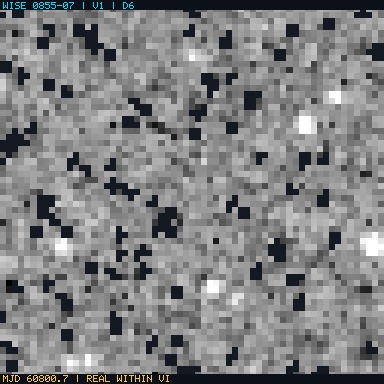

See what really moves in the infrared sky.
SPHEREx looks through a filter that changes across the detector, so one star can look different in every frame. Sky Flipbook blinks real SPHEREx images and separates true motion from a change of wavelength.
Where a comparison would mislead, it says so and shows nothing instead.

- Data
- 42 SPHEREx Level-2 FITS files
- Fields
- 5 test fields and 1 labelled simulation
- Viewing modes
- 8, from visit blink to shift-and-stack
- Claims of discovery
- None. Planet X is not detected.
Why a flipbook, and why it needs care
Blinking images taken on different dates is how astronomers have always found things that move. SPHEREx makes this harder. Its filter varies across each detector, so two images of the same patch of sky are usually taken at different wavelengths, and a star can brighten, fade or shift between frames without doing anything.
Sky Flipbook keeps that confound in view. Every frame carries its observation date, wavelength and source file. Frames are masked, registered onto a common grid and balanced on shared wavelength bins before they are compared.
- Blink
- Step through visits, exposures or differences. Wipe, zoom, trail and a coordinate readout are on every frame.
- Balance
- Compare only wavelengths the frames share, so a colour change is not mistaken for motion.
- Refuse
- When two frames share no wavelength, the comparison is marked unavailable, with the reason.
More than a blink: three things the pipeline adds
-
A flipbook you can take with you
Any view exports as a GIF, an MP4 or a CSV of its measurements. The animation is built from the frames and their metadata, so each frame is stamped with its target, visit, detector and observation date.
Open a field and use Export -
Infrared you can see
SPHEREx observes 0.744 to 5.002 µm, which no eye can see. The viewer renders these bands in visible colour: false colour puts detectors D6, D3 and D1 into red, green and blue for the same visit, and the code includes a logarithmic map of the infrared range onto 380 to 750 nm, drawn below. These are reference colours, not what an eye would see, and the three bands are not simultaneous.
Wavelength to colour, as computed by the code (logarithmic scale). Epsilon Indi Ba/Bb in false colour Barnard's Star in false colour
-
A fix for colour that looks like motion
Each detector has 17 colour bands, and the target lands in a different one in every shot, so a star can seem to flicker when nothing changed. The Track 2 solution labels every shot with its wavelength band, stacks each visit with equal weight per band, and compares only the bands two visits share. When too few are shared, the comparison is marked unreliable instead of showing a possibly false change.
See a wavelength-matched view
How it was built: four tracks, one pipeline
Each stage hands a checked result to the next. The viewer shows what every stage produced for the current view.
-
Track 1 · Data
Archive queries to IRSA, visit grouping, per-visit frame selection, cutouts and caching, and the backend API.
-
Track 2 · Image processing
Band-balanced stacking with wavelength labels from the spectral WCS, and the colour-shift fix that stops wavelength changes passing as motion.
-
Track 3 · Spectra and validation
Aperture spectra, centroid and proper-motion tracking, Gaia DR3 overlays, flag masking, and validation of the test targets.
-
Track 4 · Viewer and demo
Frame sequencing and viewing modes, the web viewer, GIF and MP4 export, shareable and embeddable links, and the submission.
Try a test field
Each link opens the viewer on installed SPHEREx data for that target.
- WISE 0855-0714 The coldest known brown dwarf and one of the Sun's nearest neighbours, moving about 8 arcseconds a year. Brown dwarf
- Barnard's Star The star with the fastest apparent motion in the sky, about 10.4 arcseconds a year. High proper motion
- Epsilon Indi Ba/Bb A brown-dwarf pair, 400 arcseconds from its host star, to test how close companions are handled. Binary brown dwarf
- RW Aurigae A young binary whose brightness dips as dust passes in front, a case of real variability. Young star
- R Draconis A pulsating Mira variable near the North Ecliptic Pole, where SPHEREx looks many times. Variable star
- Planet X candidate A hypothetical distant object moving slowly across the field, to show what a detection would look like. Simulated
Team Overdrive
Four people, four tracks, built for the NASA Space Apps Challenge 2026 in Pune.
-
Malhar Tamhankar
Track 1 · Data pipeline and backend
Built the IRSA queries, visit grouping and caching that feed every frame.
-
Akhilesh Rohit Bhosale
Track 2 · Image processing
Built the band-balanced stacking that keeps colour shifts from looking like motion.
-
Amrita Patil
Track 3 · Spectra and science validation
Built the aperture spectra, proper-motion tracking and validation of the test targets.
-
Shantanu Pawar
Track 4 · Viewer and demo
Built the web viewer, the viewing modes, the exports and this submission.
What this does not claim
This is a software validation, not an astrophysical result. The pipeline reproduces the same masks, registration and aperture measurements from the supplied files; it does not show that a source is where the catalogue says.
Coverage is sparse. One target has a single visit, and many detector and visit pairs share no wavelength, so those comparisons are marked unavailable.
- No Planet X detection and no molecular identification is claimed.
- No PSF homogenisation or aperture correction; bright cores are masked.
- Tracking ignores annual parallax; astrometry is not independently validated.
- NASA's archive (IRSA) can return errors. Installed test fields keep working; new coordinates and Gaia or CatWISE overlays may not.
Run it on the same data we used.
The first load after a quiet period can take up to two minutes on the free host.